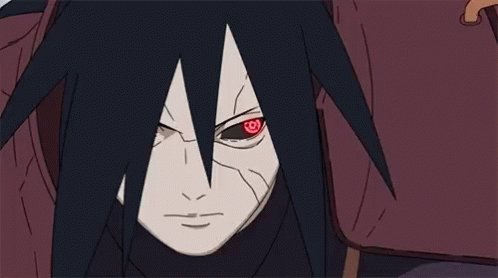

Naruto: Shippūden (ナルト 疾風伝 , Naruto Shippūden, que significa "Naruto: Crónicas del Huracán")
Naruto: Shippūden es una adaptación del anime de la segunda parte del manga, tiene lugar dos años y medio después de que Naruto partiera de Konohagakure con Jiraiya. La serie fue transmitida en Japón por TV-Tokyo desde el 15 de febrero de 2007 hasta concluir el 23 de marzo del 2017 con diez años de transmisión.

HISTORIA
La Organización Akatsuki reaparece, y se revela que su objetivo es atrapar a los nueve Bijū, las legendarias bestias con colas, siendo el Kyūbi la más poderosa de ellas. Se podría decir, que el poder se establece por el número de colas que tiene el Biju, si son nueve y el Kyubi de Naruto tiene nueve colas, pasa a ser el más fuerte, siempre que su contenedor (Naruto) sepa supervisarlo y utilizadlo.